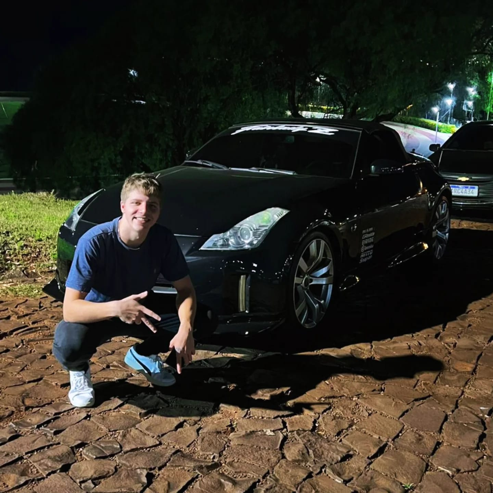

Sobre mim
- Curso Análise e Desenvolvimento de Sistemas na UTFPR.
- Tenho paixão por tecnologia e adoro programar em várias linguagens!
- Atualmente, Trabalho na SAG Software Agroindustriais como suporte tecnico.
- Gosto de aprender, e uso IA para agilizar meus estudos e projetos.
Quem sou eu

Olá! Eu sou o Felipe, estudante de Análise e Desenvolvimento de Sistemas na UTFPR.
Desde pequeno sou fissurado em entender como as coisas funcionam. Sempre curti desmontar,
explorar e descobrir pra que cada coisa serve. Acho que foi isso que despertou minha curiosidade
para aprender sobre diferentes áreas e nunca querer parar de estudar.
Fora da facul, curto mergulhar em projetos de software, aprender coisas novas e também me
divertir com meus hobbies.
Já tive a experiência de dar aulas abertas de Python na minha cidade, o que foi superlegal!
Também ajudei a ministrar um curso de Git e GitHub para meus colegas. Essas experiências de
compartilhar conhecimento sempre rendem boas histórias.
Atualmente, trabalho na SAG Software Agroindustriais e aplico o que aprendo no cotidiano.
PS: A foto com meu carro representa minha paixão por automóveis e pelo
movimento constante da vida!
Linguagens
Essas são algumas das linguagens que estou explorando e usando em projetos. Cada uma tem seus desafios e eu curto buscar formas de aprimorar meu conhecimento nelas.
Interesses
- Desenvolvimento Web
- Inteligência Artificial
- Bancos de Dados
- Tecnologias Emergentes
Projetos
- Site Pessoal: este site que você está visitando é um dos meus projetos para praticar HTML, CSS e JavaScript.
- Participei de um projeto seletivo na OCCAN Engenharias, onde tivemos que trabalhar em equipe e desenvolver um site apenas front-end, porem trabalhamos com sprints, prototipagem, reuninões e Etc
- Aulas de Python: ofereci aulas gratuitas para iniciantes na minha cidade.
- Curso de Git e GitHub: participei como instrutor para ajudar os colegas da faculdade.
- Trabalho na SAG Software Agroindustriais: coloco em prática meus conhecimentos em projetos reais do setor agroindustrial.